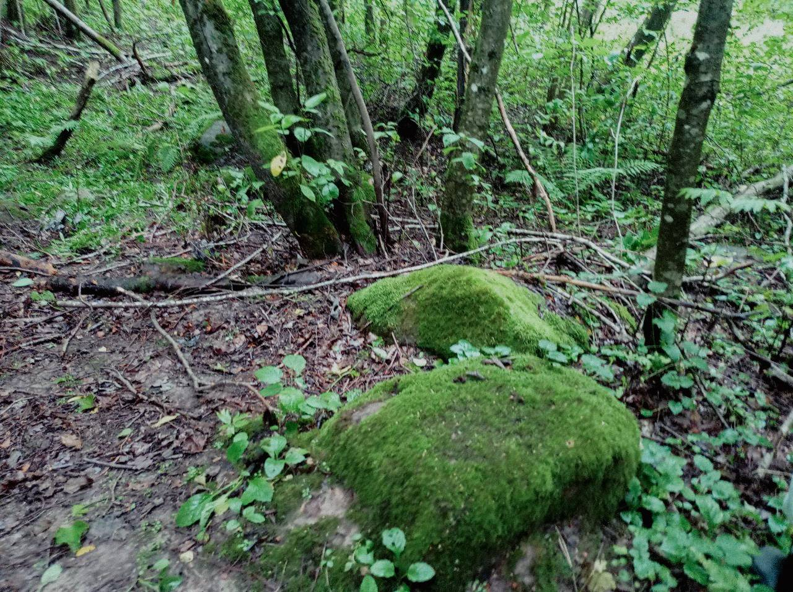
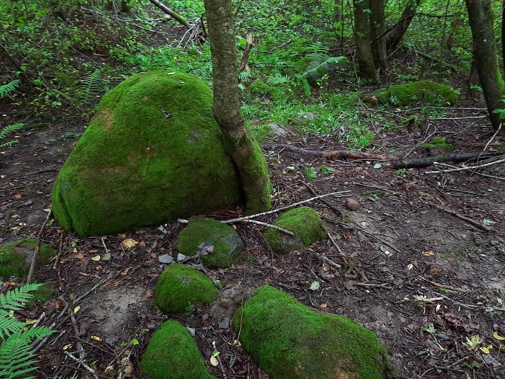
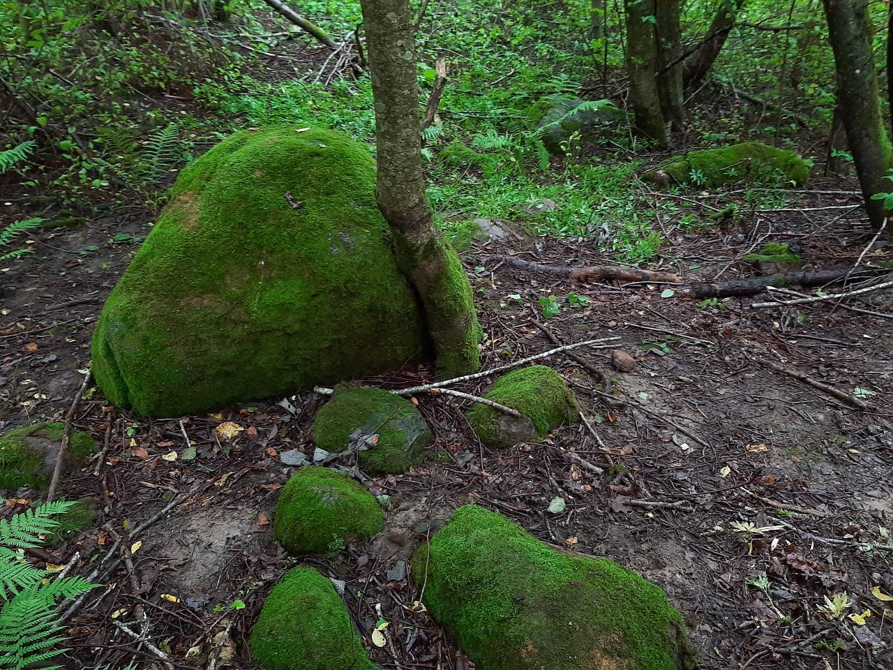
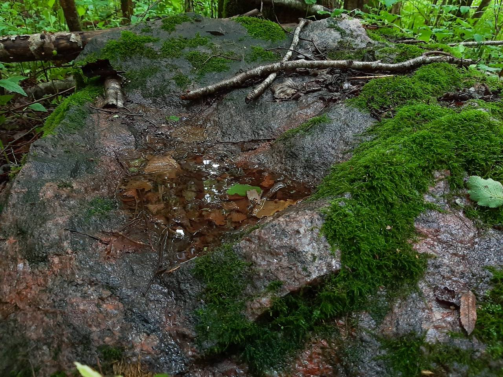

Это место скрыто от людских глаз, потому что является по-настоящему необычным. Пока вы будете к нему пробираться, вам встретятся полчища комаров и мошек. Пройдя в траве по пояс по цветущему лугу, а потом по зарослям в перелеске, особенно если это будет после дождя, вы будете выглядеть, как человек, который плавал в одежде. Настоятельно рекомендуем запастись репеллентами, резиновыми сапогами и храбростью. Несмотря на все, поверьте, это того стоист!
По дороге к волшебному месту вы можете наблюдать множество интереснейших объектов. Одним из них являются три холма. Хоть звучит это довольно просто, легенда об этой местности совсем не простая.
 

Три холма – три вершины. Последняя (третья) гора называется «Гора духов». Вторая – «Женская гора». И самая первая «Дедова гора». Это все горы вместе - «Каукас» (ударение на первый слог). С литовского языка «Каукас» переводится как «чёрт». В поверье белорусов «Каўкі» (галки) – души наших предков. Именно про душу одного из них повествует легенда этого уникального места, записанная со слов местных стариков краеведом Алесем.

«В далекие времена в этих местах развелось множество змей. Люди не знали, как с ними бороться. Однажды здесь проходил нищий, а по поверьям они имели связь с богами. Он сказал: «Я избавлю вас от змей, только разрешите мне здесь поселиться». И люди согласились. Змеи исчезли, нищий построил хижину, своими чарами возродил родник с целебной водой, и лечил людей травами и колдовством. Люди его благодарили, иногда едой, иногда деньгами. На это он и жил.
Однажды ночью к нему пришел мужчина, у которого умирала жена в родах. Он кинулся к ногам с мольбой о помощи. Дед сказал: «Хорошо, я сейчас приготовлю лекарство, а ты побудь на улице, но только запомни, что бы ни произошло, не заглядывай в хижину!». Сам дед пошел варить зелье, а мужчина в ожидании смотрел на окно с занавеской. И тут видит – весь дом изнутри озаряется яркими огнями. Красными, желтыми, синими... Очень интересно ему стало. Не послушав указания деда, он отодвинул занавеску. Не успев ничего увидеть, мужчина весь загорелся пламенем. Бросился к роднику, чтобы затушить огонь. Тут же ударил молнией Перун - бог грома и молнии и все окаменело. И дом, и родник, и дед.
С этого времени тут и стоит камень – бывший дом колдуна. А треугольная часть, которая вынимается из камня - занавеска, которую когда-то отодвинул мужчина. Родник также окаменел. Даже в жару в выемке камня стоит вода, по поверью, целебная. Рядом огромный столообразный камень - кровать колдуна, на которой он спал летом.
Записал Алекс Працкевич